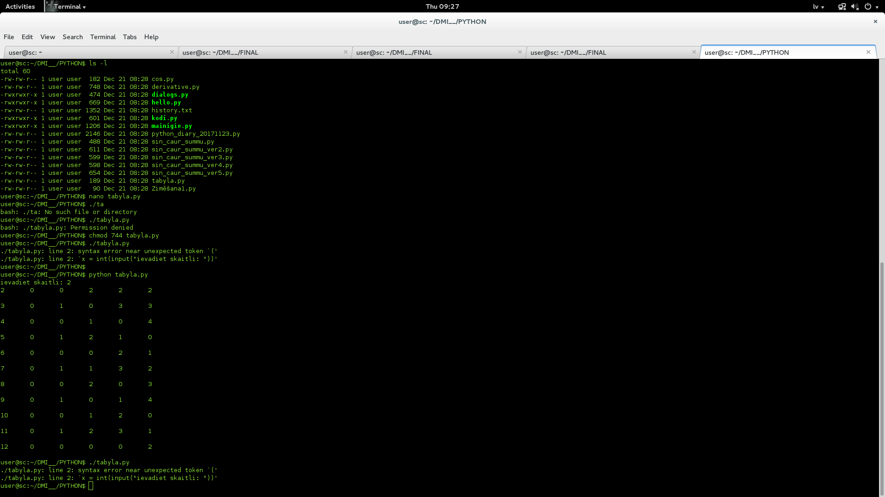

Avids Mansurovs
1. laboratorijas darbs
Tabula ar atlikumiem:
Uzdevuma galvenais mērķis ir paradīt tabulu ar skaitļa atlikumiem,kuru taisa lietotājs,ievadot pirmo skaiļu
Attēls(i) ar standarta uzdevuma rezultātiem

Attēls(i) ar individuālā uzdevuma rezultātiem

Nospiežot uz attēla var pāriet uz uzdevuma kodu github'ā
Nodarbību vēsture
- mācību nedēļa (03.09 - 07.09)
- ...
Tēmas